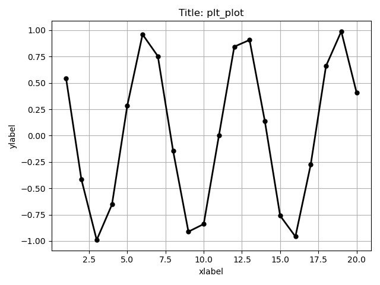
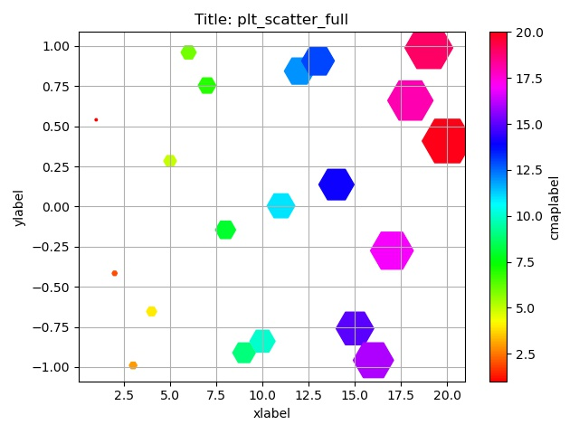

Introduction
Link to the library and the installation manual.
pltFor (reads "plot for") is an open-source Fortran-Python interface library. It allows to plot figures directly in Fortran. Basically, one can generate and save matplotlib plots from Fortran codes without creating outputs. Here an example:
This example generates the following figure:
It is equivalent to make outputs for x and y, then read it in Python and execute the following code:
import matplotlib.pyplot as plt plt.figure() plt.plot(x[:], y[:], color='black', marker='o', linestyle='solid', linewidth=2, markersize=5) plt.grid() plt.title(title) plt.xlabel(xlabel) plt.ylabel(ylabel) plt.tight_layout() plt.savefig(filename)
How it work? The plot functions are written within a Python3 Matplotlib script. With the Python package CFFI, the script is used to generate a shared library with a C-style binding interface. This library is then linked to the Fortran code with a classical C-Fortran interface.
Advantages:
- Easy to use, easy to install.
- Open source and modifiable.
- Do not require to write output files to be read by external languages.
- Do not generate external files, aside the wanted figures.
- Performed during the Fortran execution.
- Do not run command lines during the Fortran execution.
- The same approach can be used to run Python script modifying the Fortran variables (the memory is shared between Fortran and Python).
- Do not save the variables. Therefore, to re-plot the figures, we need to run again the Fortran code.
- Exotic plot options, such as advanced multiplot or adding annotations, are not taken into account.
Available subroutines
Few subroutines are currently available. Others may come.
Quick plot
The plt_plot subroutine allows quick plot.
It generates the following figure:
Advanced plot
Identical to the quick plot, but with more options.
It generates the following figure:
Advanced multiplot
Allows to plot several curves on the same figure.
It generates the following figure:
Scatter plot
It generates the following figure:
Conclusion
After a quick installation, pltFor allows to quickly check any Fortran arrays without creating a dedicated output. It can be an ideal tool for development in Fortran or for quick diagnostic that does not need to be processed after.
The library builder used here is inspired from this post. See it for more information on how to build Fortran-Python interfaces.